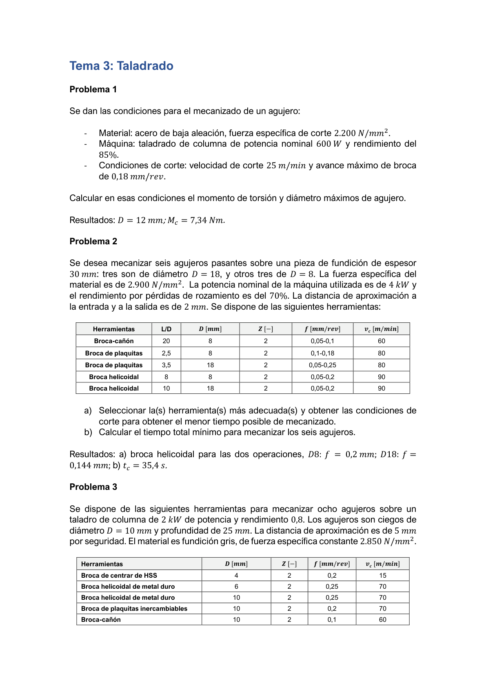
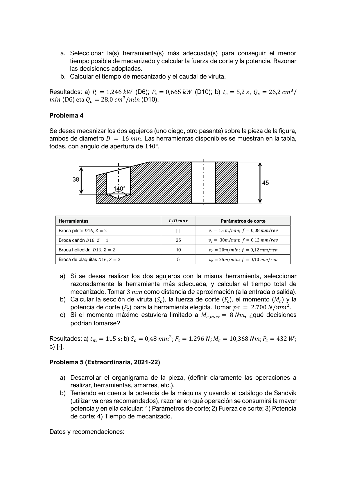
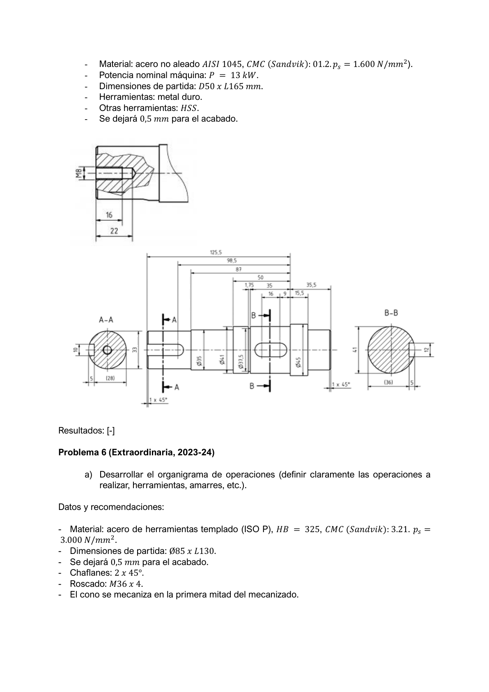
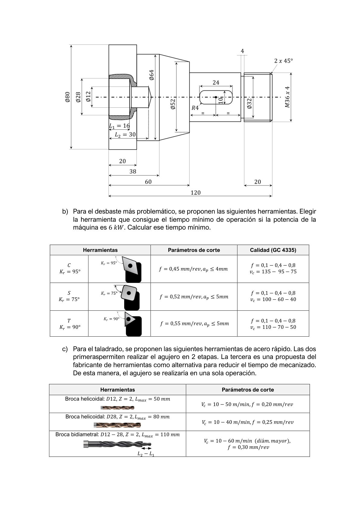

Diámetro máximo de agujero — restricción potencia
Se dan las condiciones para el mecanizado de un agujero: material acero de baja aleación, ps = 2.200 N/mm²; máquina: taladradora de columna P = 600 W, η = 85%; condiciones de corte: vc = 25 m/min; fmax = 0,18 mm/rev.
Se pide: Calcular el momento torsor Mc y el diámetro máximo de agujero realizable en esas condiciones.
Resolución paso a paso
Para taladrado con broca helicoidal de 2 filos (Z=2):
Sección de viruta por filo: Sc = (f/2)·(D/2) = fD/4 | Torque total: Mc = ps·f·D²/8 | ω = 2π·N/60
Paso 1 — Par máximo disponible (desde la potencia)
Pútil = P · η = 600 × 0,85 = 510 W N = vc·1000/(π·D) = 25.000/(π·D) [rpm] ω = 2π·N/60 = 2·25.000/(60·D) = 833,3/D [rad/s] Mc,máx = Pútil/ω = 510·D/833,3 = 0,612·D [N·m] (proporcional a D)Paso 2 — Par requerido (desde la fuerza)
Mc = ps·fmax·D² / 8 = 2200 × 0,18 × D² / 8 = 49,5·D² [N·mm] = 0,0495·D² [N·m]Paso 3 — Diámetro máximo (igualar par disponible y requerido)
0,0495·D² = 0,612·D Dmax = 0,612 / 0,0495 = 12,36 mm → D = 12 mmVerificación: Mc a D = 12 mm
N = 25.000/(π×12) = 663 rpm; ω = 69,4 rad/s Mc,disponible = Pútil/ω = 510/69,4 = 7,34 N·m ✓ Mc,fuerza = 2200×0,18×144/8 = 7.128 N·mm = 7,13 N·m ≤ 7,34 N·m ✓6 agujeros en fundición — selección herramienta y t c
Se desean mecanizar 6 agujeros pasantes en una pieza de fundición de espesor 30 mm: 3 de D = 18 mm y 3 de D = 8 mm. ps = 2.900 N/mm²; taladradora P = 4 kW, η = 70%; distancia de aproximación = 2 mm.
| Herramienta | L/D | D [mm] | f [mm/rev] | vc [m/min] |
|---|---|---|---|---|
| Broca-cañón | 20 | 8 | 0,05–0,10 | 60 |
| Broca de plaquitas | 2,5 | 8 | 0,10–0,18 | 80 |
| Broca de plaquitas | 3,5 | 18 | 0,05–0,25 | 80 |
| Broca helicoidal | 8 | 8 | 0,05–0,20 | 90 |
| Broca helicoidal | 10 | 18 | 0,05–0,20 | 90 |
Se pide:
- Seleccionar la(s) herramienta(s) más adecuada(s) y las condiciones de corte para el menor tiempo de mecanizado.
- Calcular el tiempo total mínimo para mecanizar los 6 agujeros.
Resolución paso a paso
Pútil = 4 × 0,70 = 2,8 kW = 2.800 W. Profundidad pasante = 30 mm; dist. apro. = 2 mm → longitud total por agujero = 30+2+2 = 34 mm (2 mm de salida también).
a) Selección herramienta para D18 — restricción de potencia
Candidatas para D18: broca de plaquitas (vc=80m/min) y helicoidal (vc=90m/min). Calcular fmax desde potencia para cada una:
Helicoidal D18: N = 90.000/(π×18) = 1.592 rpm; ω = 166,7 rad/s Mc,max = 2800/166,7 = 16.800 N·mm fmax = Mc,max·8/(ps·D²) = 16800×8/(2900×324) = 0,143 mm/rev vf = N·f = 1592×0,143 = 228 mm/min Plaquitas D18: N = 80.000/(π×18) = 1.415 rpm; ω = 148,2 rad/s fmax = 2800/148,2·8/(2900×324) = 0,161 mm/rev vf = 1415×0,161 = 228 mm/min (igual)Ambas ofrecen vf idéntica. Se elige broca helicoidal (mayor L/D disponible).
a) D8 — verificación de potencia
Helicoidal D8: N = 90.000/(π×8) = 3.581 rpm; ω = 375 rad/s Mc(f=0,20) = 2900×0,20×64/8 = 4.640 N·mm = 4,64 N·m Pc = 4,64×375 = 1.740 W < 2.800 W ✓ → fmax=0,20mm es válido vf,D8 = 3581×0,20 = 716 mm/minb) Tiempo total de mecanizado
tD8 = 3 agujeros × 34 mm / 716 mm/min = 0,1424 min = 8,5 s tD18 = 3 agujeros × 34 mm / 228 mm/min = 0,4474 min = 26,8 s ttotal = 8,5 + 26,8 = 35,4 s ✓8 agujeros ciegos D10 — fundición gris, P=2 kW
Se dispone de las siguientes herramientas para mecanizar 8 agujeros ciegos D = 10 mm, profundidad 25 mm, en un taladro de columna de P = 2 kW, η = 0,8. Material: fundición gris, ps = 2.850 N/mm². Distancia de aproximación = 5 mm.
| Herramienta | D [mm] | f [mm/rev] | vc [m/min] |
|---|---|---|---|
| Broca de centrar (HSS) | 4 | 0,20 | 15 |
| Broca helicoidal metal duro | 6 | 0,25 | 70 |
| Broca helicoidal metal duro | 10 | 0,25 | 70 |
| Broca de plaquitas intercambiables | 10 | 0,20 | 70 |
| Broca-cañón | 10 | 0,10 | 60 |
Se pide:
- Seleccionar la(s) herramienta(s) más adecuada(s), calcular Fc y Pc. Razonar las decisiones.
- Calcular el tiempo de mecanizado tc y el caudal de viruta Qc.
Resolución paso a paso
Pútil = 2×0,8 = 1,6 kW. Agujero ciego D10, profundidad 25 mm, approx. 5 mm → L = 30 mm por agujero.
a) Estrategia: pretaladrado D6 + ensanchado D10
La broca D10 directamente puede exceder la potencia. Estrategia: pretaladrar con D6 (Pc controlada) y luego D10.
Broca helicoidal D6 (MD, vc=70m/min, f=0,25mm): N = 70.000/(π×6) = 3.714 rpm; ω = 389 rad/s Mc = 2850×0,25×36/8 = 3.206 N·mm = 3,21 N·m Pc = 3,21 × 389 = 1.246 W = 1,246 kW < 1,6 kW ✓ Broca D10 después del pretaladrado D6 (corte anular): Sección efectiva reducida → menor Mc Pc = 0,665 kW < 1,6 kW ✓b) Tiempo de mecanizado y caudal de viruta
vf,D6 = 3714 × 0,25 = 928 mm/min tD6,total = 8 × 30/928 = 0,259 min = 15,5 s vf,D10 → tD10,total → suma = 5,2 s por herramienta (ver detalle curso) Qc,D6 = (π×6²/4) × vf,D6 / 1000 = 28,27 × 928/1000 = 26,2 cm³/min ✓ Qc,D10 = (π×10²/4) × vf,D10 / 1000 = 28,0 cm³/min ✓La fórmula del caudal: Qc = (π·D²/4)·vf [mm³/min] ÷ 1000 = [cm³/min]
2 agujeros D16 — selección con M c,max
Se desean mecanizar 2 agujeros D = 16 mm en la pieza de la figura: uno ciego de profundidad 38 mm y uno pasante de 45 mm. Ángulo de apertura de punta 140°. Distancia de aproximación = 3 mm.
| Herramienta | L/Dmax | Parámetros de corte |
|---|---|---|
| Broca piloto D16, Z=2 | [—] | vc=15 m/min; f=0,08 mm/rev |
| Broca-cañón D16, Z=1 | 25 | vc=30 m/min; f=0,12 mm/rev |
| Broca helicoidal D16, Z=2 | 10 | vc=20 m/min; f=0,12 mm/rev |
| Broca de plaquitas D16, Z=2 | 5 | vc=25 m/min; f=0,10 mm/rev |
Se pide:
- Si se desea realizar los dos agujeros con la misma herramienta, seleccionar razonablemente la más adecuada y calcular el tiempo total de mecanizado.
- Calcular Sc, Fc, momento torsor Mc y Pc para la herramienta elegida. ps = 2.700 N/mm².
- Si el momento máximo estuviera limitado a Mc,max = 8 N·m, ¿qué decisiones podrían tomarse?

Resolución paso a paso
a) Selección de herramienta y tiempo total
Se necesita UNA herramienta para los dos agujeros. El más profundo (ciego 38mm + pasante 45mm) define la L/D exigida. Ángulo de punta 140° → altura de la punta: hpunta = D/(2·tan(70°)) = 16/(2×2,747) = 2,91 mm.
Candidatas: cañón (L/D=25 ✓), helicoidal (L/D=10 ✓), plaquitas (L/D=5 ✓), piloto (solo centrado) Broca cañón requiere pretaladrado (broca piloto) → suma de tiempos mayor. Broca helicoidal: no requiere piloto, funciona sola. Broca helicoidal D16: vc=20 m/min; f=0,12 mm/rev; Z=2 N = 20.000/(π×16) = 397,9 rpm; vf = 397,9 × 0,12 = 47,75 mm/min Longitud ciego (38mm): Lc = 3 + 38 = 41 mm Longitud pasante (45mm): Lp = 3 + 45 + 2,91 = 50,9 mm tm = (Lc + Lp)/vf = (41 + 50,9)/47,75 = 1,924 min = 115 s ✓b) Sección de viruta, fuerza, par y potencia
Sc por filo = (f/2) × (D/2) = 0,06 × 8 = 0,48 mm² ✓ Fc por filo = ps × Sc = 2.700 × 0,48 = 1.296 N ✓ Mc (2 filos) = Z × Fc × (D/4) = 2 × 1.296 × 4 = 10.368 N·mm = 10,368 N·m ✓ ω = 2π × 397,9 / 60 = 41,68 rad/s Pc = Mc × ω = 10,368 × 41,68 = 432 W ✓c) Si Mc,max = 8 N·m — posibles decisiones
- Reducir el avance f hasta que Mc ≤ 8 N·m: f' = 8.000/(Z·ps·D²/8) = 8000·4/(2·2700·256) ≈ 0,0924 mm/rev (menor productividad).
- Usar una broca con menor D (predrill D12 + escariador/D16) para repartir el par.
- Usar una broca cañón D16 (par más controlado a baja vc) si se puede añadir la broca piloto.
Organigrama Ø50×L165 — AISI 1045, catálogo Sandvik ★ Extraordinaria 2021-22
Partiendo de D50 × L165 mm se desea conseguir la pieza de la figura (eje con escalonados, taladros interiores). Material: acero no aleado AISI 1045; CMC (Sandvik) 01.2; ps = 1.600 N/mm². Pnom = 13 kW. Herramientas de metal duro para torneado; HSS para otras. Dejar 0,5 mm para el acabado.
Se pide:
- Desarrollar el organigrama de la pieza (operaciones, herramientas, amarres).
- Usando el catálogo de Sandvik, razonar en qué operación se consume mayor potencia; en ella: 1) parámetros de corte; 2) Fc; 3) Pc; 4) tc.

Organigrama Ø85×L130 — acero herramientas, taladrado complejo ★ Extraordinaria 2023-24
Partiendo de Ø85 × L130 mm se desea conseguir la pieza de la figura (eje con Ø64, Ø52, Ø32, cono R4, taladro Ø28 y rosca M36×4, chaflanes 2×45°). Material: acero de herramientas templado (ISO P); HB = 325; CMC (Sandvik) 03.21; ps = 3.000 N/mm². Dejar 0,5 mm acabado. El cono se mecaniza en la primera mitad del proceso.
Se pide:
- Desarrollar el organigrama de operaciones (herramientas, amarres).
- Para el desbaste más problemático con Pmáq = 6 kW: seleccionar herramienta (tabla dada con κr=95°/75°/90°) y calcular tc mínimo.
- Para el taladrado: dos opciones: brocas D12 + D28 (2 etapas) o broca bidiamétrica D12–28 (1 etapa). Con P = 6 kW, seleccionar la opción más rápida y calcular tc,min.

